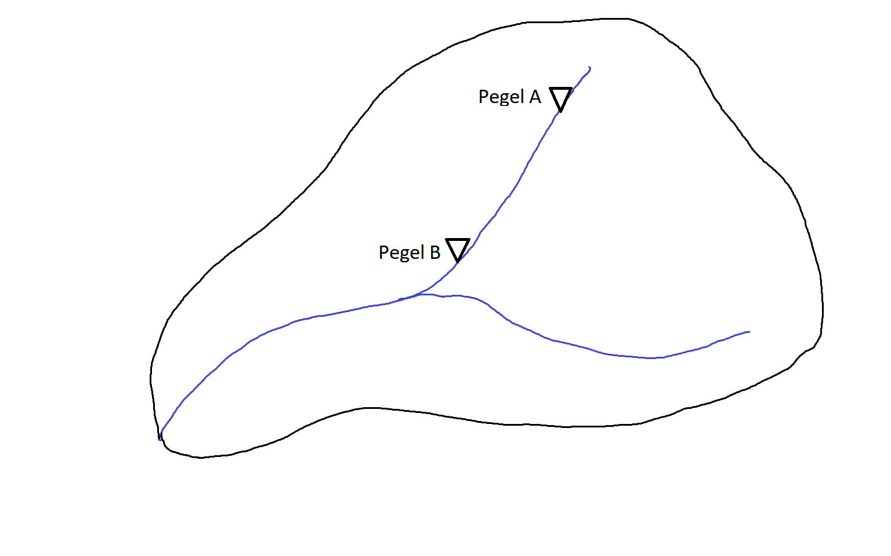
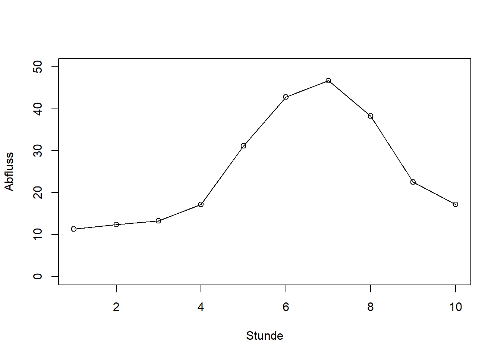
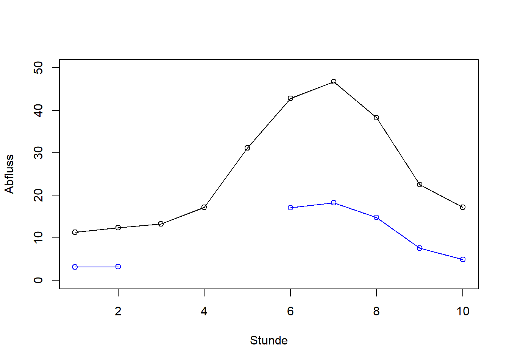
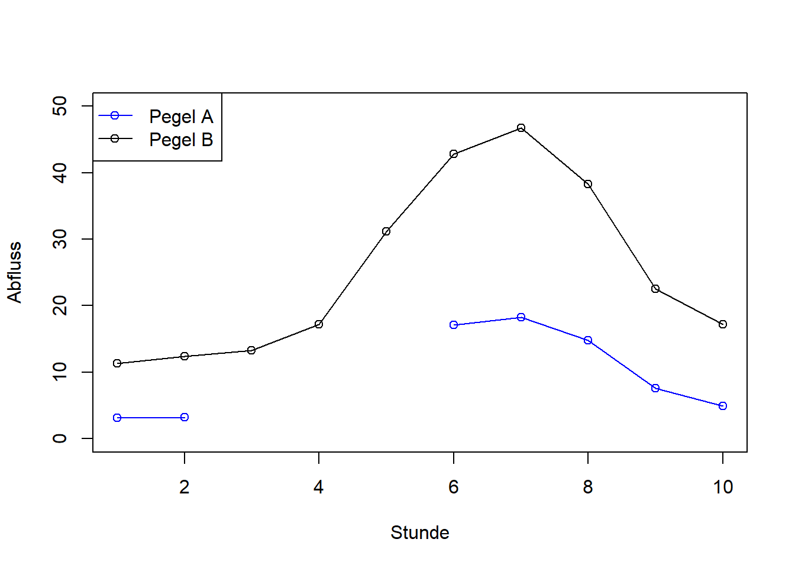

Stunde [1] 1 2 3 4 5 6 7 8 9 10pegelA [1] 3.1 3.2 NA NA NA 17.1 18.3 14.8 7.6 4.9pegelB [1] 11.3 12.4 13.3 17.2 31.2 42.8 46.7 38.3 22.5 17.2Hydrologie und Wasserbau - Übung 01
In dieser Übung werden Sie Ihre ersten Schritte im Programmieren mit R machen. Das Ziel ist, dass Sie lernen, einfache Berechnungen in R durchzuführen und einfache Visualisierungen von Daten zu erstellen. Gehen Sie zuerst durch die online R-Einführung Erste Schritte mit R von Thomas Petzoldt am Institut für Hydrobiologie der TU-Dresden.
Aufgabe 1 besteht darin, den Abflussbeiwert für ein kleines Einzugsgebiet zu berechnen. Hierbei müssen Sie einige Daten in R eingeben und anschließend einfache Berechnungen durchführen, wie zum Beispiel das Bestimmen des Abflussvolumens und das Umrechnen von Einheiten. Aufgabe 2 besteht darin, die Daten mithilfe der Plot-Funktion von R grafisch darzustellen.
Gegeben sind Pegelaufzeichnungen von 2 Pegeln (Pegel A und Pegel B) im Einzugsgebiets des Musterbachs. Die Größe des Einzugsgebiets am Pegel B beträgt (\(A = 143,7~[km^2]\)). Die Pegelaufzeichnungen zeigen eine Hochwasserwelle nach einem Niederschlagsereignis von \(h_N=14~[mm]\) bei Stunde 0. Aufgrund von Wartungsarbeiten am Pegel A mussten die Durchflussmessungen (\(Q\) in \([m^{3}s^{-1}]\)) unterbrochen werden. Am Pegel B wurden die Messungen unterdessen durchgehend fortgeführt.

| Stunde | Pegel A \((m^{3}s^{-1})\) | Pegel B \((m^{3}s^{-1})\) |
|---|---|---|
| 1 | 3,1 | 11,3 |
| 2 | 3,2 | 12,4 |
| 3 | 13,3 | |
| 4 | 17,2 | |
| 5 | 31,2 | |
| 6 | 17,1 | 42,8 |
| 7 | 18,3 | 46,7 |
| 8 | 14,8 | 38,3 |
| 9 | 7,6 | 22,5 |
| 10 | 4,9 | 17,2 |
Stunde, pegelA, pegelB), die jeweils die Werte in den Spalten der Tabelle enthalten. Verwenden Sie dazu die Funktion c(). Fehlende Werte geben Sie mit NA (= not available) an.Stunde [1] 1 2 3 4 5 6 7 8 9 10pegelA [1] 3.1 3.2 NA NA NA 17.1 18.3 14.8 7.6 4.9pegelB [1] 11.3 12.4 13.3 17.2 31.2 42.8 46.7 38.3 22.5 17.2pegelB in einem Diagramm dar, wobei die uhrzeit (Stunde) die x-Achse ist. Verwenden Sie dazu die Funktion plot(). Setzen Sie die Skala der y-Achse zwischen 0 und 50 mit dem Argument ylim = c(0, 50). Setzen Sie das Argument type = "o", damit sowohl die Datenpunkte als auch die Linien sichtbar sind. Sie können auch Achsenbeschriftungen mit xlab = "X-Titel" und ylab = "Y-Titel". Ihr Plot sollte ungefähr so aussehen:
pegelA hinzu. Verwenden Sie dazu die Funktion lines(). Um die Datenreihen unterscheiden zu können, ändern Sie die Farbe mit dem Argument col = "blue", oder auch eine andere Farbe.
legend("topleft", legend = c("Pegel A", "Pegel B"),
col = c("blue", "black"), lwd = 1, pch = 1)